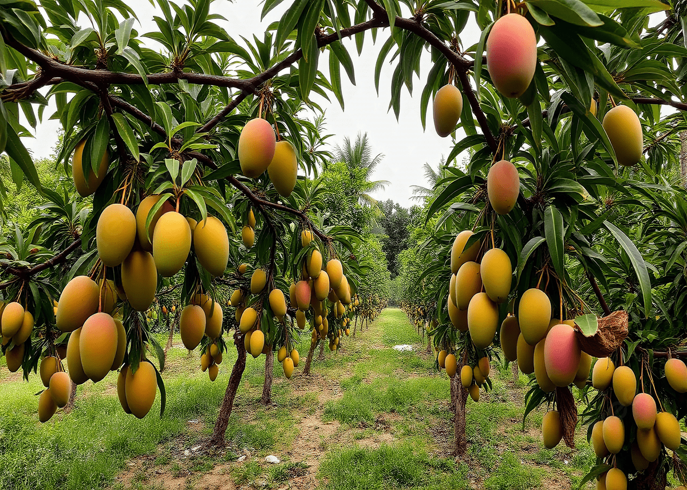
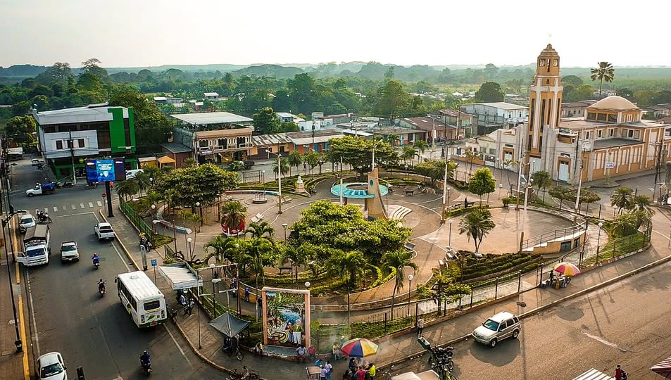

Agroturismo
Mango Tour
Un bosque agroturístico con cerca de 1.500 árboles de mango, ubicado a 20 minutos de la cabecera cantonal, ingresando por la vía al recinto Campo Alegre, en el kilómetro 4,5.
Destinos
De las huertas de mango a la sala del museo cantonal, así es el recorrido que armamos por el cantón.

Un bosque agroturístico con cerca de 1.500 árboles de mango, ubicado a 20 minutos de la cabecera cantonal, ingresando por la vía al recinto Campo Alegre, en el kilómetro 4,5.

Bautizado en honor al escritor riosense Justino Cornejo Vizcaíno, exhibe una colección arqueológica de vasijas y herramientas de los pueblos aborígenes de la zona, junto a una galería de personajes ilustres del cantón.

Espacios recreativos junto al río Puebloviejo con piscinas artificiales para la pesca de tilapia y cachama, con la posibilidad de preparar y comer el pescado recién sacado del agua.

Puebloviejo es el principal productor de banano de Los Ríos y cultiva cacao fino de aroma desde la época colonial, un grano tan apreciado que llega hasta el chocolate gourmet europeo.

Las parroquias rurales de Puerto Pechiche y San Juan conservan el paisaje agrícola y la vida ribereña del cantón, con haciendas, esteros y caminos entre cultivos de ciclo corto.

Elevado a cantón el 7 de febrero de 1846 con el nombre de San Francisco, Puebloviejo conserva en su centro y parque central el ritmo de una ciudad montuvia con más de un siglo de vida cantonal.
Combinamos los atractivos en tours de medio día, día completo o fin de semana.